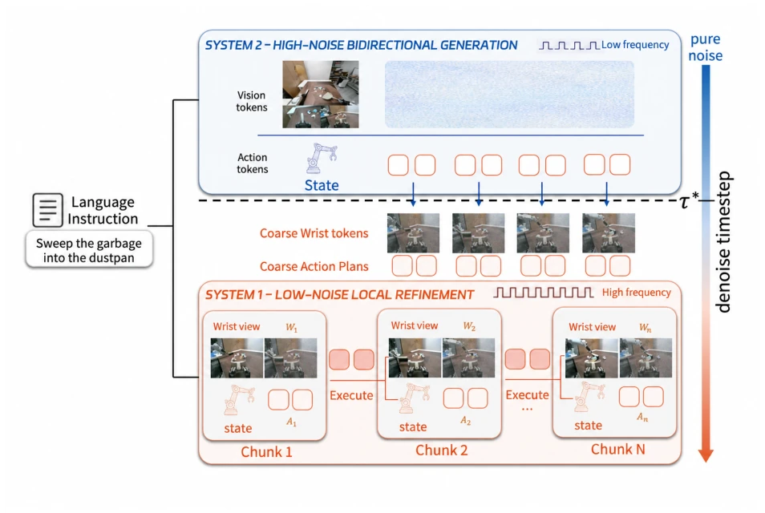
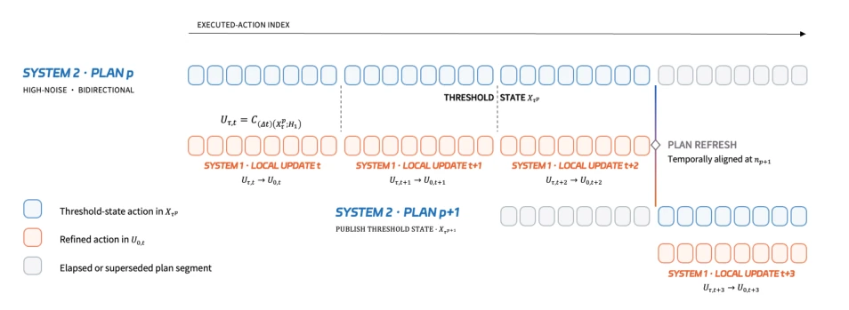
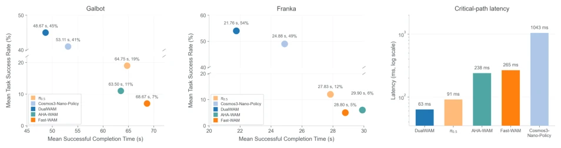
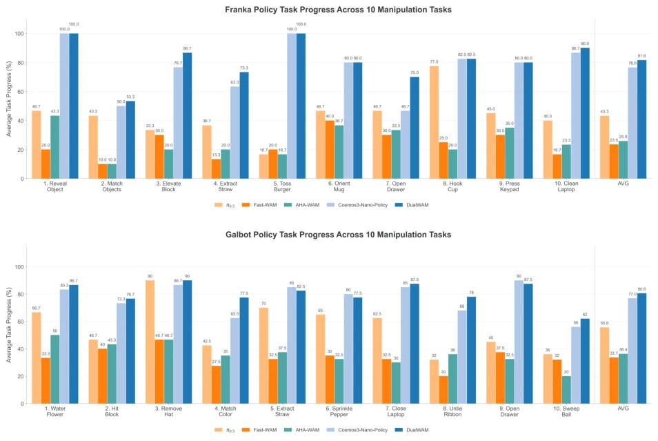

Figure 1 Overview. DualWAM couples low-frequency global world-action planning with high-frequency wrist-centric refinement along a shared denoising trajectory, enabling more responsive and efficient zero-shot manipulation.

Figure 2 DualWAM pipeline. System 2 denoises a complete global world-action state through the high-noise interval. At threshold τ, temporally aligned wrist-action windows are passed to compact System 1, which completes low-noise local refinement using fresh wrist observations.

Figure 3 Asynchronous closed-loop execution in DualWAM. Low-frequency System 2 updates a partially denoised global world-action trajectory Xp τ in the background, while high-frequency System 1 repeatedly extracts the temporally aligned local window. At each plan refresh, the updated trajectory Xp+1 τ is aligned with the current executed-action index. This concurrent schedule allows System 1 to maintain responsive control without waiting for System 2 to regenerate the global plan.
Figure 4 Training coverage and zero-shot evaluation tasks. Top: distribution of 43,058 annotated subtasks across 74 manipulation skills in the self-collected Galbot training corpus. Middle and bottom: initial configurations for the ten Franka FR3 and ten Galbot G1 evaluation tasks, respectively.

Figure 5 Zero-shot real-robot performance and critical-path latency. Left and center: full-task success rate versus mean completion time over successful rollouts on Galbot and Franka, respectively. Completion time is the number of executed control steps divided by the control frequency. Right: critical-path latency on a logarithmic scale. DualWAM attains the highest success rate on both embodiments while providing the lowest latency and completion time.

Figure 6 Per-task zero-shot progress. Mean normalized task progress on Franka (top) and Galbot (bottom). DualWAM matches or exceeds the strongest baseline across all Franka tasks, while its Galbot gains are distributed across diverse interactions rather than being driven by a single task.